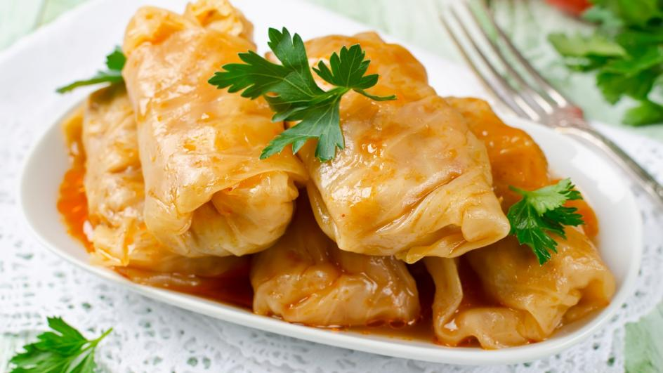

Back
Sarma

Description
Cabbage rolls filled with a mixure of minced meat and rice.
Ingridients
- 1 large pickled cabbage
- 500g minced meat
- 100g rice
- 1 onion
- 500ml tomato sauce
- salt, pepper, bay leaf
Steps
- Pan fry meat with rice
- Wrap the mixture in cabbage
- Put Sarma rolls in a pot, cover with water add bay leaf and leave it for 2 hours to cook